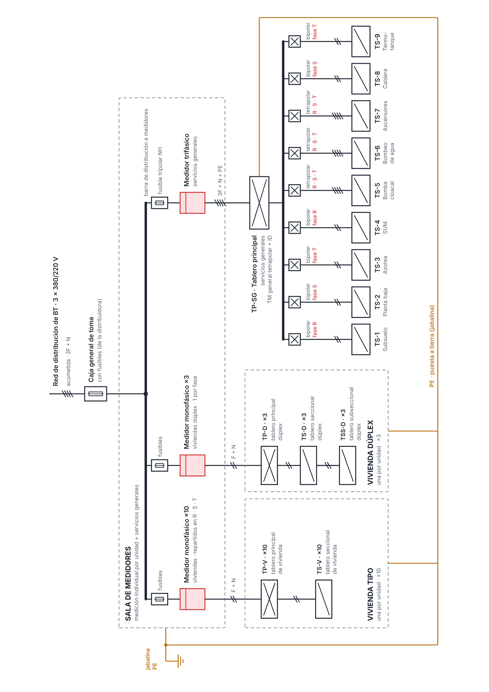
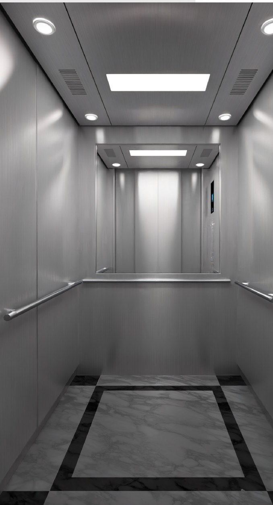
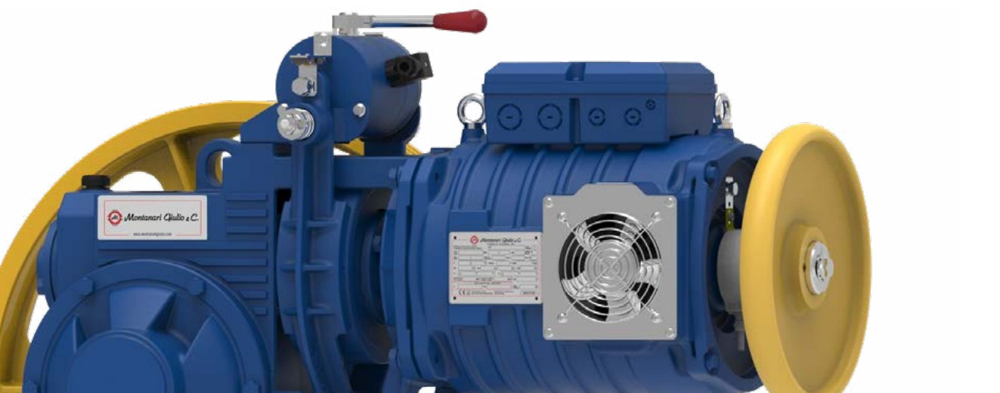

INSTALACIONES II · U.N.M.
Instalación eléctrica y transporte vertical del edificio de viviendas
Docentes: Pirolo, Gabriel · Discacciati, Mariela
Grupo: 02 · 2.º cuatrimestre · Comisión 1
Alumnos: Avelar Paz, Valentina · Bartolotti, Tobías · Di Cosmo, Ignacio · Galdames, Abril · Gómez, Lucio · Vitale, Candelaria
En este trabajo hicimos la instalación eléctrica y el transporte vertical del edificio de viviendas que venimos trabajando en la materia. Primero vimos qué consume cada parte del edificio, con eso armamos el esquema unifilar de tableros, y después elegimos el ascensor y su máquina.
La memoria está dividida en dos partes: Electricidad y Transporte vertical. En cada una explicamos qué elegimos, cómo funciona y por qué tomamos cada decisión.
El edificio tiene subsuelo, planta baja, seis pisos altos y azotea. La planta baja está en el nivel ±0,00, el primer piso en +3,40 y desde ahí los pisos se repiten cada 2,90 m hasta el sexto piso en +17,90. La azotea está en +20,85 y sobre ella está la sala de máquinas del ascensor.
Tiene 10 viviendas y 3 viviendas dúplex. Los dúplex ocupan dos pisos cada uno (1.º y 2.º, 3.º y 4.º, 5.º y 6.º) y tienen escalera interna. En planta baja están el ingreso, el hall y el SUM. En el subsuelo están las instalaciones de servicio, como las bombas.
Esto nos sirvió para la instalación eléctrica, porque hay dos tipos de consumo muy distintos: el de cada vivienda, que paga cada propietario, y el de las partes comunes (bombas, ascensor, iluminación de palieres, SUM), que paga el consorcio.
PARTE 1
El edificio se alimenta de la red de baja tensión de la distribuidora, que es de 3 × 380/220 V. Entre dos fases hay 380 V y entre una fase y el neutro hay 220 V. La acometida entra con tres fases y neutro (3F + N) a la caja general de toma, que está sobre la línea municipal y tiene los fusibles de la distribuidora.
Pedimos acometida trifásica porque el edificio tiene muchas unidades y equipos con motor. Con una sola fase no alcanzaría la potencia y además no se podrían alimentar los motores trifásicos de las bombas y del ascensor.
De la caja de toma se pasa a una barra de distribución en la sala de medidores, que está en planta baja. De esa barra salen tres grupos, cada uno con sus fusibles y su medidor:
Elegimos medición individual porque cada propietario tiene que pagar lo que consume su departamento y nada más. Las partes comunes tienen su propio medidor, y eso lo paga el consorcio. Juntamos todos los medidores en un solo lugar en planta baja para que la distribuidora pueda leerlos sin entrar a los departamentos.
Cada vivienda y cada dúplex se alimenta en monofásico (una fase + neutro, 220 V). Lo elegimos así por estas razones:
Para que la acometida no quede desbalanceada, repartimos los 13 medidores monofásicos entre las tres fases R, S y T. Así cada fase carga más o menos la misma cantidad de departamentos. En los dúplex pusimos uno en cada fase.
Los servicios generales se alimentan en trifásico (3F + N + PE). Lo elegimos así porque:
En cada unidad hay un tablero principal (TP) y uno o más tableros seccionales (TS):
Los dúplex tienen un tablero más porque tienen dos plantas:
Pusimos el tablero subseccional en la planta de arriba para que los circuitos de ese piso no tengan que bajar todos hasta el tablero de abajo. Los recorridos de cable quedan más cortos, y si hay una falla arriba se puede cortar solo esa planta.
Después del medidor trifásico está el TP-SG (tablero principal de servicios generales). Tiene un interruptor general tetrapolar con diferencial y una barra de la que salen 9 líneas, una para cada tablero seccional:
| Tablero | Alimenta | Protección | Por qué |
|---|---|---|---|
| TS-1 | Subsuelo | bipolar · fase R | Iluminación y tomas del subsuelo. Separado para poder cortarlo sin dejar sin luz al resto. |
| TS-2 | Planta baja | bipolar · fase S | Hall, ingreso y palieres. Es lo que más se usa y no tiene que quedar sin luz por una falla en otro sector. |
| TS-3 | Azotea | bipolar · fase T | Iluminación y tomas de la azotea y de la sala de máquinas. |
| TS-4 | SUM | bipolar · fase R | El SUM tiene un uso propio y cargas que varían mucho (eventos, equipos), por eso le dimos una línea exclusiva. |
| TS-5 | Bomba cloacal | tetrapolar · R·S·T | Motor trifásico. Saca los líquidos cloacales del subsuelo, que está por debajo de la colectora. |
| TS-6 | Bombeo de agua | tetrapolar · R·S·T | Motor trifásico. Sube el agua de la cisterna al tanque de reserva. |
| TS-7 | Ascensores | tetrapolar · R·S·T | Motor trifásico de la máquina de tracción (ver Parte 2). |
| TS-8 | Caldera | bipolar · fase S | Comando, encendido y bomba de la caldera, que funcionan a 220 V. |
| TS-9 | Termotanque | bipolar · fase T | Equipo de 220 V. Tiene su propia línea para poder cortarlo por mantenimiento. |
Elegimos un tablero seccional para cada servicio por tres razones. La primera es que, si salta una protección, se corta solo ese servicio y el resto del edificio sigue funcionando. La segunda es que cada equipo se puede cortar por mantenimiento sin tocar los demás. Y la tercera es que los equipos con motor quedan separados de la iluminación.
Las líneas de motores (bombas y ascensor) son tetrapolares porque llevan las tres fases y el neutro. Las de 220 V son bipolares (fase y neutro) y las repartimos entre R, S y T para que ninguna fase quede más cargada que las otras.
Cada tablero tiene dos tipos de protección:
Son bipolares en los circuitos monofásicos y tetrapolares en los trifásicos, para que corten todos los conductores activos a la vez.
Al lado de la sala de medidores hay una jabalina clavada en el terreno. De ella sale el conductor de protección (PE), que llega a todos los tableros del edificio. A ese conductor se conectan las partes metálicas de los equipos y los tomas con tierra. Si un cable pelado toca la carcasa de un equipo, la corriente se va por el PE y el diferencial corta, en vez de pasar por la persona que lo toca.
En el punto más alto del edificio planteamos un pararrayos: una punta captora sobre un mástil que recibe la descarga del rayo y la lleva por un conductor de bajada hasta su propia puesta a tierra. La puesta a tierra del pararrayos se une con la de la instalación para que todo quede al mismo potencial y no haya diferencias de tensión peligrosas entre ellas.
Todo lo anterior lo resumimos en el esquema unifilar de tableros. En el esquema, los trazos oblicuos sobre cada línea indican cuántos conductores activos lleva: dos en monofásico (F + N) y cuatro en trifásico (3F + N).
El esquema completo está en la página siguiente.

PARTE 2
El edificio tiene subsuelo, planta baja y seis pisos, así que hace falta un ascensor para que se pueda llegar a todos los pisos sin escalera, incluidas las personas con movilidad reducida. Pusimos un ascensor con 8 paradas: subsuelo, planta baja y los pisos 1.º a 6.º. El recorrido es de unos 21 m, desde el subsuelo hasta el sexto piso (+17,90).
Elegimos un ascensor eléctrico de tracción con sala de máquinas arriba del hueco, en la azotea. Lo elegimos por estas razones:
El ascensor de tracción funciona así:
Para la cabina tomamos la línea EcoStyle de Servas, que viene en versión con sala de máquinas y sin sala de máquinas. La elegimos porque está pensada para edificios de este tamaño (hasta 16 paradas, hasta 1,5 m/s y menos de 1.000 kg) y porque la fabrica una empresa argentina, así que hay repuestos y service.

| Dato | Valor adoptado |
|---|---|
| Versión | EM, con sala de máquinas |
| Carga | 450 kg (6 personas) |
| Cabina (A × B) | 1.100 × 1.300 mm |
| Hueco (C × D) | 1.750 × 1.590 mm (contrapeso lateral, 1 embarque) |
| Puerta | 800 mm, apertura lateral |
| Velocidad | 1 m/s |
| Paradas | 8 (subsuelo, planta baja y 1.º a 6.º piso) |
Elegimos la cabina de 1.100 × 1.300 mm porque es la más chica de la línea que entra una silla de ruedas, y para un edificio de viviendas 6 personas por viaje es suficiente. Elegimos 1 m/s porque con 8 paradas el ascensor hace el recorrido completo en unos 21 segundos. Más velocidad no hace falta y obligaría a una máquina más grande y a más altura de hueco.
Como máquina elegimos la M73 de Montanari, que en Argentina distribuye Trimarchi. Es una máquina con reductor (sinfín y corona) y polea de tracción.

| Dato | Valor |
|---|---|
| Tipo | Máquina de tracción con reductor |
| Polea de tracción | Ø 480 mm |
| Relación de reducción | 1/37 |
| Motor | 5,5 kW, asincrónico, 4 polos, con variador VVVF, 50 Hz |
| Velocidad y carga (según catálogo) | 1,02 m/s · hasta 499 kg |
| Carga estática máxima | 2.200 kg |
| Peso del reductor | 110 kg · 2,8 l de aceite |
La elegimos por estas razones:
El hueco del ascensor recorre el edificio desde el subsuelo hasta la azotea, y arriba está la sala de máquinas con la M73 y el tablero de maniobra. Para la versión con sala de máquinas, a 1 m/s y hasta 600 kg, el fabricante pide:
El foso es para que entren los amortiguadores y para que la cabina tenga lugar si se pasa del nivel de abajo. La última altura es para que la cabina tenga lugar arriba si se pasa del último piso, y para proteger al técnico que trabaja sobre el techo de la cabina.
El ascensor se alimenta desde el TS-7 (Ascensores), que sale del tablero principal de servicios generales con una línea tetrapolar (3F + N + PE). Es trifásico porque el motor de la M73 es trifásico de 380 V. En la sala de máquinas, esa línea llega al tablero de maniobra del ascensor, que tiene su propio interruptor y el variador VVVF. La iluminación de la sala de máquinas sale del TS-3 (Azotea), así que hay luz en la sala aunque se corte el ascensor para hacerle mantenimiento.
Al estar en servicios generales, el consumo del ascensor lo mide el medidor trifásico y lo paga el consorcio.